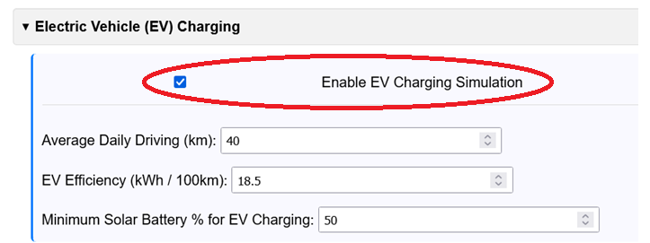
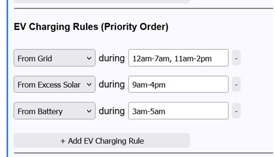

This guide explains how to use the "Electric Vehicle (EV) Charging" feature. This allows you to simulate the financial impact of adding an EV to your household, showing how a solar and battery system can help offset the new charging costs.
Prerequisite: Before starting, you should have already set up your main household data (either via CSV/NEM12 upload or Manual Mode bill entry). The EV charging load will be added on top of this existing household load.
Go to the collapsible section titled "Electric Vehicle (EV) Charging" (located just below Section 1: Data Input).

You can find this on your car's dashboard or by a quick search. Typical values are 15-18 kWh/100km for efficient models (like a Tesla Model 3) or 20-25 kWh/100km for larger electric SUVs.
This is the most important part, as it defines how and >when your EV charges. The analyser lets you set different charging strategies for each provider, which is configured in Section 5: Providers & Tariffs.
Go to a provider's details and find the "EV Charging Rules" section.

The analyser processes these rules in Priority Order (top to bottom). It tries to fulfill the day's total EV charging need (calculated from Step 1) using the first rule. Any remaining need is passed to the second rule, and so on.
For each rule, you set the Source and Time:
Recommended Strategy Example:
From Excess Solar, Hours: 9am-4pm (Charges from free solar first)From Grid, Hours: 11pm-6am (Tops up from cheap off-peak grid power)This strategy ensures the EV prioritises solar and only uses the grid during the cheapest off-peak times, maximizing your savings.
Ensure the rest of your analyser setup is complete. The EV simulation will interact with all other parts of your configuration (your battery size, inverter limits, etc.).
Click the Run ROI Analysis button. When you enable EV charging, the simulated EV load is added to both your "Baseline Cost" and your "New System Cost".
This allows you to accurately model the additional value a solar & battery system provides specifically for an EV owner.